Solen, eller sola, er stjernen i sentrum av solsystemet som jorden og andre objekter går i bane rundt. Den er nesten perfekt kuleformet og består av varm plasma sammenvevd i magnetfelt. Diameteren er ca. 1 392 000 km.
Måne: 95593 Azusienis
Radius: 695 508 km
Avstand til Jorden: 149 600 000 km
Masse: 1,989E30 kg
Overflatetemperatur: 5 778 K
Alder: 4,603E9 år
Merkur
Merkur er den innerste og minste planeten i solsystemet og har en omløpstid rundt solen på 87,969 dager. Merkurs bane har den høyeste eksentrisiteten av alle planetene i solsystemet, og den har den minste aksehelningen.
Avstand fra Solen: 57 910 000 km
Omløpstid: 88 dager
Radius: 2 440 km
Dagens lengde: 58 d 15 t 30 m
Masse: 3,285E23 kg (0,055 M⊕)
Overflateareal: 74 800 000 km²
Mars
Mars er den fjerde planeten fra solen i vårt solsystem og er oppkalt etter den romerske krigsguden Mars. Planeten blir ofte beskrevet som den «røde planeten» på grunn av sitt rødlige utseende, forårsaket av jern(III)oksid på overflaten.
Gravitasjon: 3,711 m/s²
Overflateareal: 144 800 000 km²
Avstand fra Solen: 227 900 000 km
Masse: 6,39E23 kg (0,107 M⊕)
Dagens lengde: 1 d 0 t 37 m
Måner: Phobos, Deimos
 


